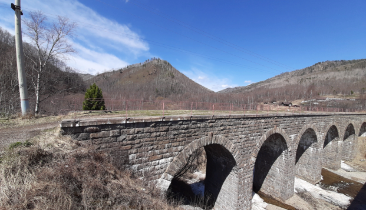

Lake Baikal tours
Visit the deepest and most mysterious lake. Take a trip
around Lake Baikal exploring the local nature and culture.
Compose your own journey or choose from the ones you've
already created.
around Lake Baikal exploring the local nature and culture.
Compose your own journey or choose from the ones you've
already created.
“Baikal is amazing, and it's not for nothing that the Siberians call it not a
lake, but a sea. The water is unusually transparent, so that one can see
through it as through the air; its colour is soft turquoise, pleasant to the
eye. The shores are mountainous, covered with forests; all around there is
an impenetrable, unpermitted game.”
lake, but a sea. The water is unusually transparent, so that one can see
through it as through the air; its colour is soft turquoise, pleasant to the
eye. The shores are mountainous, covered with forests; all around there is
an impenetrable, unpermitted game.”
Why You should travel with us?
Travelling is for us an opportunity to experience freedom. It's a really important thing that everyone should try at least once. You don't need to have a lot of money or be physically fit to start exploring our beautiful world. Travelling can help you reinvent yourself and understand fully who you are. We appreciate the moments and emotions we get during our adventures and we'd love for you to join us.
Are you ready to go ;-) ?
Are you ready to go ;-) ?

Svetlana
Chief tour guide
Chief tour guide
Choose where to go

Bike tour

KBJD

Bolshie Koty

Snowy Olkhon

Buguldeika
Special seasonal trips
Special Winter Adventure

Day 1: departure from Irkutsk, arrival in the village of Elantsy, transfer to the UAZ, driving along the ice road to the village of Khuzhir, accommodation in a guest house, walking along Khuzhir, visiting sacred places: Cape Shamansky, observation mountain.
Day 2: Departure to the UAZ to Cape Okoy, a trip to the lakes of Olkhon Island, lunch on ice, departure to Irkutsk.
Day 2: Departure to the UAZ to Cape Okoy, a trip to the lakes of Olkhon Island, lunch on ice, departure to Irkutsk.
Tour "Lstvyanka-bolshie koty"

Departure from Irkutsk, arrival in the village of Listvyanka, registration of a pass to the territory of the National Park, exit to the Great Baikal Trail, movement towards B. Kotov (about 20 km), with stops for tea, snacks, photos and swimming in cozy coves along the trail, arrival in B.Koty, rest, boarding a boat to Listvyanka village, departure to Irkutsk
Around Lake Baikal

Departure from Irkutsk, arrival in the village of Kultuk, tea party, exit along the trail along the KBZHD towards the Staraya Angasolka station. On the way there are beautiful views of Lake Baikal, Khamar-Daban, we pass 4 tunnels, 2 bridges and 3 stations of the old railway, the distance to St. Angosolki: 8 km.
In Old Angasolka, a visit to the N. Roerich Museum (optional), lunch, a walk around the village. Exit towards Kultuk village, departure to Irkutsk.
In Old Angasolka, a visit to the N. Roerich Museum (optional), lunch, a walk around the village. Exit towards Kultuk village, departure to Irkutsk.
Tour "Velopipedny Olkhon"

Day 1: departure from Irkutsk, arrival to the ferry to Olkhon Island, crossing, travel to the village of Khuzhir, accommodation in a guest house.
Day 2: cycling in Khuzhir, visiting sacred places: Cape Shamansky, observation mountain, a trip to the lakes of Olkhon Island, lunch on the shore of Lake Baikal, departure to Irkutsk.
Day 2: cycling in Khuzhir, visiting sacred places: Cape Shamansky, observation mountain, a trip to the lakes of Olkhon Island, lunch on the shore of Lake Baikal, departure to Irkutsk.


"Traveling is necessary for those who study" Mark Twain.